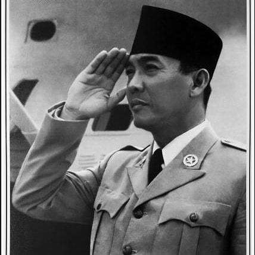
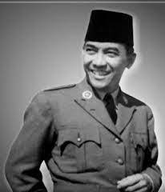
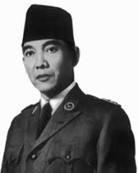

Biografi singkat Bapak Proklamator Indonesia, Ir. Soekarno
Soekarno merupakan putra dari Raden Soekemi Sosrodihardjo dan Ida Ayu Nyoman Rai. Ibunda Bung Karno merupakan bangsawan Bali. Kedua orang tua Soekarno bertemu saat sang ayah menjadi guru di Bali.
Soekarni hanya sebentar tinggal dengan kedua orang tuanya di Blitar. Kemudian beliau pindah ke Surabaya untuk menamatkan SD. Selama di Surabaya, Bung Karno tinggal di kediaman Haji Oemar Said Tjokroaminoto. Setelah tamat, Bung karno melanjutkan pendidikan di HBS (Hoogere Burger School).
Lulus tahun 1920, Soekarno melanjutkan pendidikan di THS (Technische Hoogeschool) di Bandung. THS ini merupakan cikal bakal Institut Teknologi Bandung. Soekarno lulus pada 25 Mei 1926 dan mendapat gelar "Ir".
Setelah lulus, Soekarno mendirikan Biro Insinyur bersama dengan Ir. Anwari tahun 1926. Selama di Bandung, Bung Karno aktif dalam banyak organisasi. Beliau juga mendirikan Partai Nasional Indonesia pada 4 Juli 1927.
PNI adalah partai yang bertujuan untuk memerdekakan bangsa Indonesia. Karena tujuan inilah Soekarno di penjara pada 29 Desember 1929 di penjara Sukamiskin. Bung Karno kemudian berulang kali dipenjara karena beliau tetap teguh memperjuangkan kemerdekaan Indonesia.
Perjuangan Soekarno cukup panjang sebelum akhirnya mampu menyatakan kemerdekaan Indonesia.Tepat pada tanggal 17 Agustus 1945, bersama Mohammad Hatta dan beberapa tokoh lainnya, beliau menyatakan kemerdekaan bangsa.
Dilansir dari laman RRI, Soekarno sebelumnya sudah mengemukakan dasar negara, Pancasila, pada sidang BPUPKI 1 Juni 1945. Dasar ini kemudian menjadi dasar negara Indonesia.
Kiprah Bung Karno tidak berhenti di lingkup negara Indonesia saja. Bung Karno tercatat berusaha menghimpun bangsa-bangsa untuk membuat Gerakan Non Blok. Gerakan ini beranggotakan bangsa-bangsa di Asia, Afrika, dan Amerika Latin. Gerakan ini merupakan hasil dari Konferensi Asia Afrika pada 1955 di Bandung.
Bersumber dari laman Kepustakaan Presiden-Presiden Republik Indonesia, Bung Karno memiliki 3 orang istri selama hidupnya. Dari ketiga istrinya, Soekarno dikarunia 8 orang anak. Fatmawati, istri pertama Bung Karno, melahirkan Guntur, Megawati, Rachmawati, Sukmawati, dan Guruh. Taufan dan Bayu adalah putra Soekarno dari Hartini. Ratna Sari Dewi, istri Soekarno berdarah Jepang, memiliki anak bernama Kartika.
Bung Karno menyerahkan jabatannya sebagai presiden Indonesia setelah terjadi gejolak politik. Gejolak ini disebabkan oleh pemberontakan G-30-S/PKI yang menewaskan banyak perwira TNI.
Soekarno wafat di RSPAD tanggal 21 Juni 1970 karena sakit yang terus memburuk. Beliau dimakamkan di Blitar, dekat dengan makam sang ibunda, Ida Ayu Nyoman Rai.
Foto kenangan bung karno


